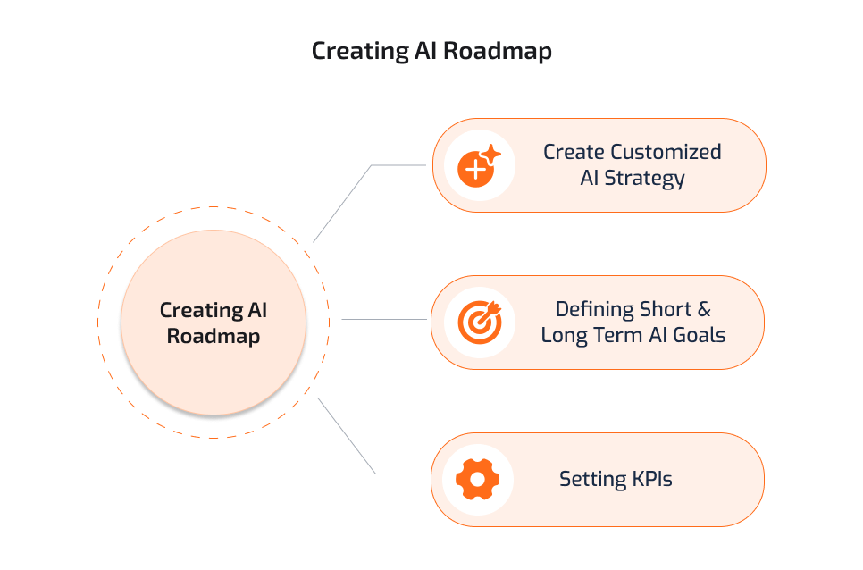
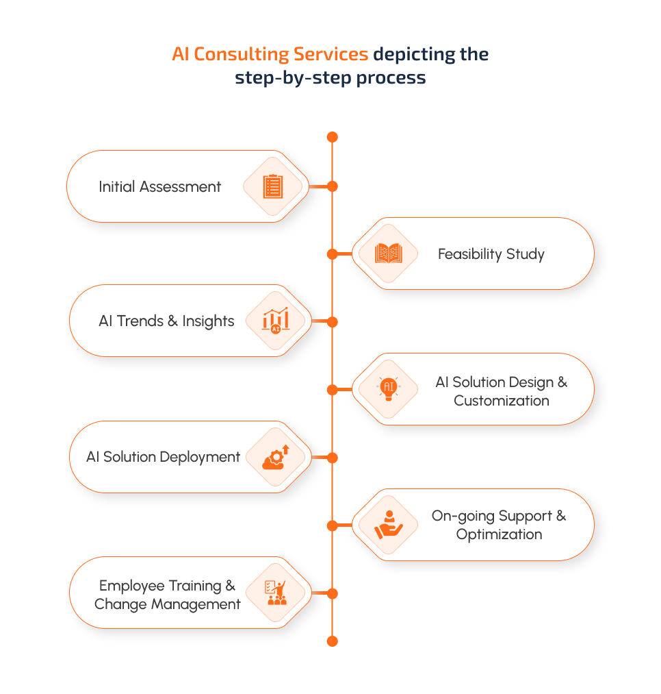
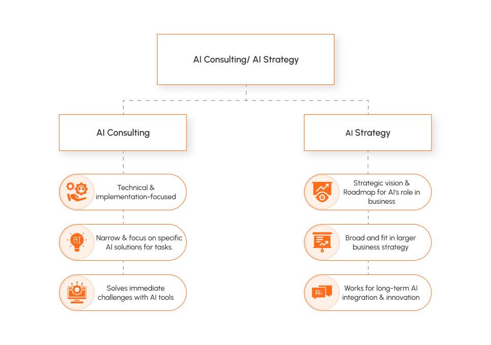
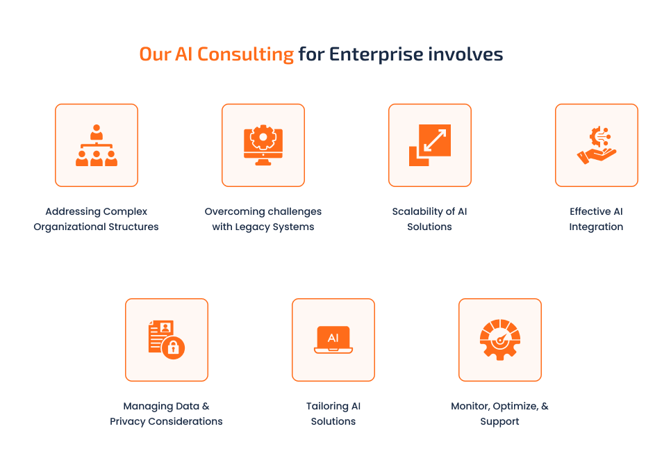

In the competitive digital market, businesses are constantly striving to stay ahead of rivals. That's where AI strategy consulting comes in. It involves partnering with AI experts who guide companies in the process of integrating Artificial Intelligence (AI) into business strategies. As a trusted AI strategy consulting service company, you can hire AI consultants from us as they help you get the most out of this advanced technology. We transform how businesses, teams, and stakeholders operate thus fostering innovation, efficiency, and growth.
Our expertise extends just beyond AI strategy consulting and thus includes AI content strategy consulting. Thus, ensuring businesses can leverage AI for both operations and digital growth. Whether you prefer future-proofing your business or achieving lasting success, partner with us to be your AI strategy consulting company to witness transformative growth.
Expert AI Strategy Consulting to Maximize Business Growth
Adopting AI into your business won't become a smart choice unless you own the right strategy. AI strategy consulting is all about developing a strategic roadmap that aligns AI with your business goals. Integrating AI into your business for growth and innovation requires expertise. With our AI Strategy Consulting service, your business can maximize the use of AI to drive growth, avoid common pitfalls, and gain a competitive edge.
Our AI development company has strategy consulting experts who will find out how AI can benefit your business first by analyzing competitors in the industry. Hire AI consultant from Sparkout, as they will provide how AI can benefit when integrated and ensure the integration process runs smoothly. Whether you want to deal with data-driven decision-making, automate operations, or deliver personalized customer experiences, our AI strategy and consulting is your one-stop destination. Get ready to find the untapped potential of your business with our strategic roadmap integrated with AI solutions.
What Do AI Strategy Consulting Services Involve?
With our AI Strategy Consulting services, you will get a structured approach to embed AI solutions into your business operations. This involves gaining the maximum benefits of AI while aligning with business strategies and goals. Our Artificial Intelligence strategy services is an end-to-end advisory that covers everything from use-case ideation to ROI modeling and governance policies. Here is a breakdown of what exactly our AI Strategy Consulting services involve:
The foremost thing any business should consider before integrating AI is to find if the company can leverage AI via AI Readiness Assessment. It is a structured approach in which we help businesses evaluate the current business model, workflow, and technologies used and find areas where AI can be integrated. During the assessment, our AI strategy consultants will find the availability of the data, its reliability, infrastructure readiness, scalability, and compliance.
The AI roadmap development is a part of AI strategy consulting services, where planning and implementing AI solutions takes place strategically in accordance with business goals. Our team ensures the AI consulting & strategy development is efficient, well-planned, and provides measurable results over time.

Finding the right use cases for AI is important for businesses looking to use AI effectively. Our strategists will help find out where AI embedding can automate, optimize, and enhance the business workflow. We help you choose the right AI-powered solution between predictive analytics, automation, customer personalization, etc. The most impacted and feasible AI solutions are processed for development and deployment.
For greater efficiency and scalability, it is vital to choose the right AI tools, platforms, and frameworks. It includes NLP, machine learning, automation, and computer vision. Additionally, it is vital for AI models to work along with the existing software and technologies of your business and our AI strategy consulting service ensures a seamless integration. Besides, our AI strategy consultant also take care of implementing AI solutions into your operations with minimal or no disruptions.
Every business has different requirements and challenges to face. Hence we develop and train AI models based on the business type. Our experts train AI models in such a way they can process the data, learn patterns, and make predictive decisions. AI models are retrained and optimized to enhance accuracy and efficiency. Thus, businesses can harness the power of automation and unlock growth.
It is vital to develop AI solutions that adhere to legal, ethical, and security standards. We provide AI strategy consulting for businesses in compliance with industry regulations like GDPR, HIPAA, CCA, etc. Our AI systems also address risks, biases, and ethical concerns. In addition, the AI-driven solutions we develop possess robust security measures such as data encryption, access control mechanisms, etc.
When integrating AI into business operations, employees often find it difficult to adapt to the new systems. Hence, we offer effective change management and employee training to ease this transition and ensure AI adoption is smooth. This includes providing teams with structured training programs, promoting a data-driven mindset, and encouraging collaboration between AI and human expertise.
AI implementation doesn't end with the deployment. Rather AI systems should be monitored continuously and fine-tuned to deliver accurate results. This we take up tracking AI performance, making updates when required, and scaling AI applications when businesses grow with our AI strategy integration services.
Artificial Intelligence Business Strategy - A Simple Breakdown
Developing a strong AI business strategy is all about finding out where AI can help your businesses grow and bring in improvements. We take up this step to help you unlock the fullest potential of your businesses and stay ahead of the market shifts. Sparkout Tech is an AI strategy consultancy company and our effective business strategy to embed Artificial Intelligence (AI) involves:
Firstly, looking at where AI integration will bring in real difference. It may be anything from automating tasks to better decision-making and improved customer engagement.
Upon finding where AI can be integrated into your existing model, we help create a customized strategy plan for your business. This will focus on solving the existing problems and enhancing the operations.
We help integrate AI into your existing system by implementing the right AI solutions. This way, our strategy AI integration service makes sure the AI solution works with no disruption to your existing system.
With AI integration, we help you make better decisions in your business operations. AI solutions developed will analyze a larger dataset to identify the patterns and predict the trends.
With AI integration, customer experiences will be enhanced as it recommends products tailored to users' needs. Similarly, chatbots will respond to queries instantly.
An efficient AI consulting & strategy development will make business workflow efficient and increase productivity. With AI solutions, manual work processes are eliminated and hence employees can focus on valuable tasks.
AI Consulting Services - How is it Different from AI Strategy Consulting Services
By choosing our Artificial Intelligence strategy and consulting services, we help seamlessly integrate AI technologies into your business. We offer end-to-end support and it may range from understanding where to integrate AI to implementing the AI solution, we cover the entire lifecycle of AI to maximize your business value. Take a look at each phase of AI consulting services from the below representation:

Know How AI Consulting Services Different from AI Strategy Consulting Services:
1. AI consulting services are more technical and more hands-on. i.e., The AI strategy company focuses on the implementation, optimization, and managing AI technologies. Whereas AI strategy consulting services are at a slightly higher level and are more about developing a broader plan that integrates AI into business strategy.
2. AI consulting is narrower and involves using specific AI tools or solutions for particular problems. However, AI strategy consulting is broad and is all about planning for the future of AI that aligns with your business. i.e., it involves understanding your business objectives, creating a roadmap for AI integration, and operational efficiency.
3. The goal of AI consulting is to offer support for businesses in selecting, integrating, and managing AI tools that improve operational efficiency, and automation, and improve customer satisfaction. Whereas, AI strategy consulting helps businesses understand how AI can make a difference at the organizational level and provides long-term success.

Our AI Consulting Services involves the entire AI implementation process from strategy to development and deployment. Our service is tailored to address the unique needs of your business and thus ensures the AI solution is bringing in desirable success. With continuous support and optimization, we help you experience the fullest potential of AI and ensure the technology grows with your business.
We believe in and work towards a result-focused approach with AI integration to transform your business growth for long-term success.
Transform Your Business with AI-Powered Digital Innovation
Integration of AI is a crucial step in digital transformation. It involves a strategic and comprehensive approach to integrate AI across organizations to transform the business process and make informed decisions while fostering innovation. By providing advanced AI solutions, we are making organizations make an overall shift in their business culture and mindset to stay ahead of the competition. Here is why AI digital transformation matters:
- Improved Customer Experience
- Future-proofing your Business
- Increased Operations Efficiency
- Better Decision Making
- Deliver Innovation
With our AI digital transformation services, we support businesses that adopt AI technologies that drive meaningful growth.
What Does AI Strategy Development All About?
Developing an AI strategy is an important step in the AI integration roadmap. If there is no AI strategy, AI adoption into your business becomes unclear, inefficient, time-consuming, costly, and affects the success rate. Hence, we craft well-planned AI strategy services that makes integrating the right AI technologies easie,r which in turn enhances the operations, growth, and efficiency. With the right strategy, businesses can scale their AI solutions. Choose us to be your AI strategy development service provider and let our AI experts create a result-driven AI strategy for businesses of any type.
AI Consulting for Enterprise - Overcoming Challenges & Drive Success
Integrating AI into large enterprises is not just advantageous, but also involves unique challenges. This is due to the complex organizational structures, legacy systems, and scalability options. However, our AI consulting for enterprise service is designed to address these complexities, bringing long-term success.

Thus, enterprises benefit from our AI-driven IT consulting by enabling legacy systems, cloud platforms, and digital tools to integrate AI for maximum business impact.
Our team of AI consulting experts possesses specialized knowledge and expertise to ensure a smooth and seamless AI adoption. We make sure to address and eliminate the AI integration challenges in your existing business systems. Whether you want to drive innovation or maintain a competitive edge, partner with us to be your AI consulting service for enterprises to increase productivity and sustainable growth.
What Do AI Strategy Consultants Can Do?
Whether you want to accelerate your business growth or are looking for an experienced AI strategy consultant, we have a team of experienced AI strategy consultants who make AI adoption into your business easier. With a wealth of technical expertise and industry knowledge, we provide personalized guidance throughout the entire AI integration. Get to know what an AI strategy consultant can do for your business.
1. An experienced AI strategy consultant will understand your business, identify where AI can be embedded, and ensure AI strategy aligns with your business goals.
2. The consultant will create a strategic roadmap tailored to your business for integrating AI.
3. An expert consultant will help you overcome challenges like data quality, system compatibility, etc., for smooth AI adoption.
4. With industry trends and AI expertise, AI strategy consultants will guide you with where to invest to receive the highest ROI.
5. An AI strategy consultant will identify potential risks involved with AI implementation and ensure to mitigate those risks securely.
6. The top AI companies with skilled AI experts will support you with post-deployment.
AI Technology Stack for Scalable and Efficient Business Solutions
Artificial Intelligence development requires a strong technology stack that ensures efficiency, scalability, and accuracy. By choosing our AI strategy consulting service, your business will be upgraded with cutting-edge AI technologies such as machine learning, natural language processing, data analytics, and cloud computing. With these technologies, we create AI solutions that are robust, scalable, efficient, and customizable to your business needs.
Here are the Key Components of Our AI Technology Stack


Industries Leveraging AI Strategy Consulting for Long-Term Success
We offer AI strategy consulting services to a wide range of industries and businesses fostering innovation and efficiency.. Take a look at how industries are using AI solutions for long-term success.
| Industry | AI Solutions |
|---|---|
| Finance & Banking | AI-driven fraud detection, risk management, and personalized customer experiences. |
| Healthcare | AI-powered diagnostics, predictive analytics, and automated administrative workflows. |
| Retail & E-commerce | Personalized shopping experiences, inventory optimization, and AI-driven insights. |
| Manufacturing & Supply Chain | Predictive maintenance, process automation, and demand forecasting. |
| Energy & Utilities | Smart grid management, energy forecasting, and automated asset monitoring. |
| Telecommunications & Media | AI-powered customer support, network optimization, and content recommendations. |
| Automotive & Transportation | Autonomous systems, fleet management, and AI-enhanced safety measures. |
| Education & E-learning | Personalized learning experiences, AI-driven tutoring, and automated admin tasks. |
Key Reasons to Choose Us for AI Strategy Consulting
We are a dedicated team of AI strategy consultants prioritizing your business success. Our AI consulting service provides your business with smooth and seamless AI integration. Here is what sets up apart from its competitors:
1. Our team has highly experienced AI professionals with a proven track record of AI strategy, implementation, and industry best practices.
2. You can build your own AI as we provide customized AI solutions for your business that align with your goals, industry requirements, and existing systems.
3. Our AI strategy consultants provide the most innovative AI technologies and methodologies to make your business stay ahead of the competition.
4. With our AI strategy consulting, you will be getting end-to-end support from initial strategy development to deployment and post-deployment optimization.
Achieve Long-Term Success With Our AI Strategy Consulting
To foster innovation, efficiency, scalability, and long-term success, it is vital to opt for AI strategy consulting. With the right strategy, your business will unlock new efficiencies while enhancing customer experiences. With our AI strategy consulting, the integration of AI solutions into your existing systems is seamless. We help you overcome your business challenges with our strategic roadmap with end-to-end support personalized for your business needs. Choose us to be your AI Strategy Consulting company to shape the future of your business with result-driven AI approaches and achieve long-term success.